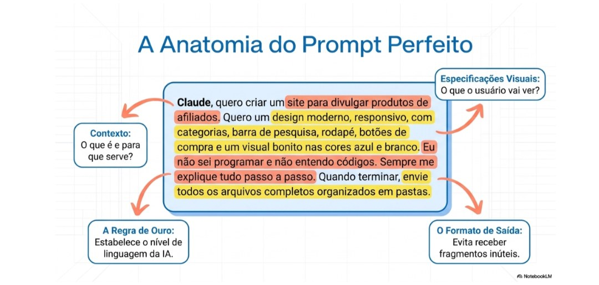
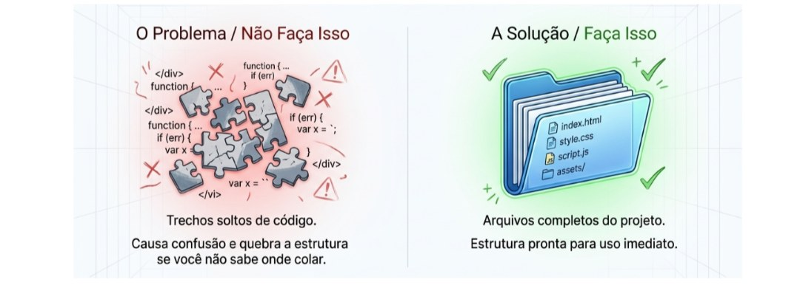
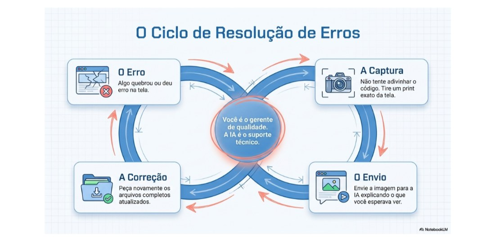
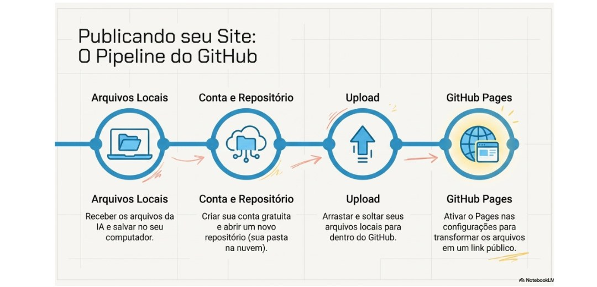
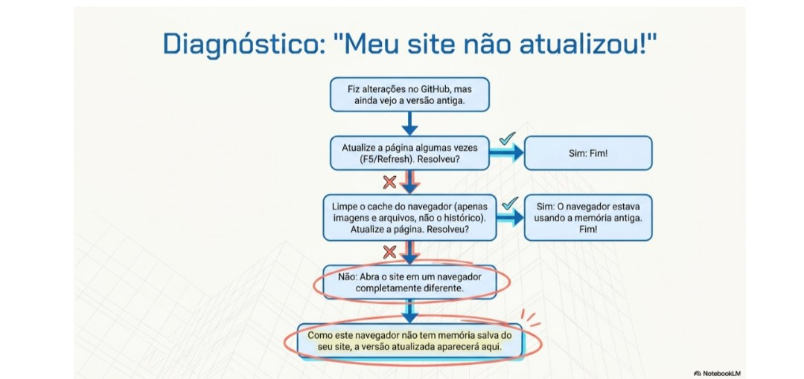
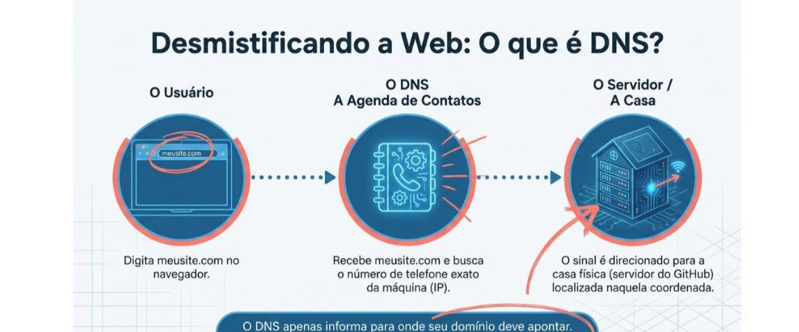
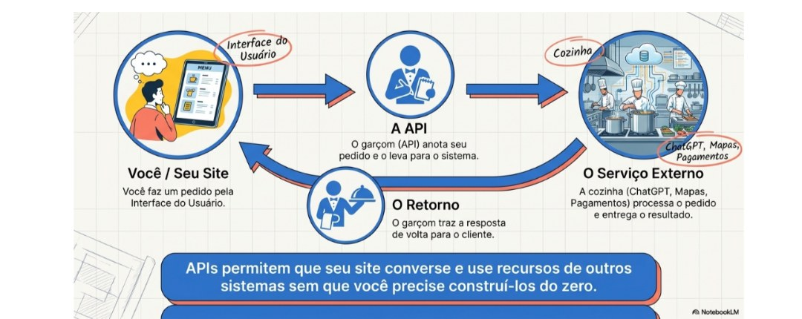
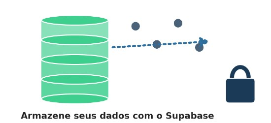
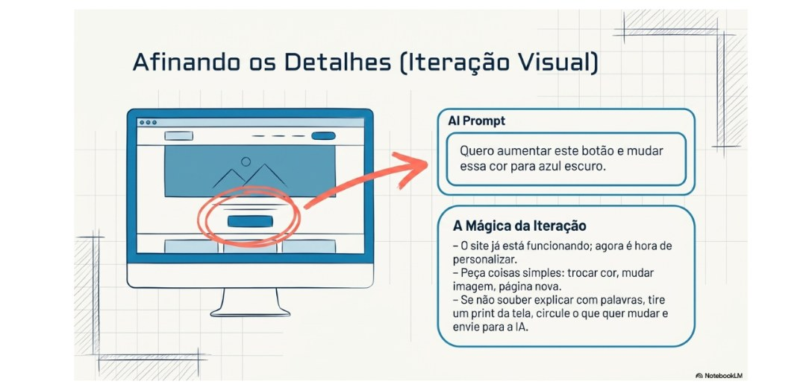

Você não precisa aprender a programar.
Se você acha que precisa aprender HTML, CSS e JavaScript para criar um site, eu também pensava assim.
A verdade é que eu não sabia absolutamente nada de programação quando comecei. Não entendia códigos, não sabia usar o GitHub, nem fazia ideia do que era GitHub Pages, DNS ou banco de dados.
Mesmo assim, eu tinha uma ideia e queria transformá-la em realidade.
Foi assim que descobri que não precisava ser programador. Eu precisava aprender a conversar com a IA.
Neste guia, vou mostrar exatamente o caminho que percorri para criar meu próprio site usando Inteligência Artificial. Não sou desenvolvedor, apenas alguém que decidiu aprender fazendo.
Se eu consegui, você também consegue.
A IA será sua parceira
Tudo começa com uma boa conversa.
A IA não consegue adivinhar exatamente o que você quer. Quanto mais detalhes você fornecer, melhor será o resultado.
Por exemplo:

Depois disso, acrescente algo muito importante:
Isso faz toda a diferença.
Recebendo os arquivos completos
Muitas pessoas recebem apenas pequenos trechos de código e acabam ficando perdidas.
Por isso, sempre peça à IA:

Assim você receberá toda a estrutura pronta.
Se aparecer algum erro, não tente adivinhar o que fazer. Tire um print da tela, envie para a IA e peça ajuda.

Sempre que houver alterações importantes, peça novamente os arquivos completos.
Publicando seu site no GitHub
Depois que a IA entregar todos os arquivos, chegou a hora de publicar seu site.
Você aprenderá a:
- criar uma conta no GitHub
- criar um repositório
- enviar arquivos
- editar arquivos
- excluir arquivos
- fazer alterações simples
- ativar o GitHub Pages
Mesmo sem saber programação, você conseguirá colocar seu site no ar.

Seu site não atualizou?
Isso aconteceu comigo várias vezes.
Você faz alterações no site, envia tudo para o GitHub, mas continua vendo a versão antiga.
Na maioria das vezes, isso acontece porque o navegador ainda está usando uma versão salva na memória (cache).
O que fazer?

- Atualize a página algumas vezes
- Se continuar igual, limpe apenas o cache do navegador (não é necessário apagar seus arquivos ou histórico)
- Depois tente novamente
- Se ainda assim não funcionar, abra o site em outro navegador
Como esse navegador ainda não possui uma versão salva do site, normalmente você verá a atualização imediatamente.
O que é DNS?
Quando comecei, também não fazia ideia.
Imagine que um site seja uma casa. Toda casa possui um endereço. Na internet, esse endereço normalmente é um conjunto de números.
O DNS funciona como uma agenda de contatos. Em vez de decorar números complicados, você digita:
E o DNS encontra o endereço correto. Ele apenas informa para onde seu domínio deve apontar.

O que são APIs?
Quando comecei, pensei que precisava pagar várias APIs para meu site funcionar. Mas afinal... o que é uma API?
Imagine um restaurante. Você faz o pedido para o garçom. O garçom leva seu pedido até a cozinha. Depois traz sua comida.
A API funciona exatamente assim. Ela faz seu site conversar com outro serviço.

Por exemplo: ChatGPT, Gemini, sistemas de pagamento, tradução, mapas, clima, entre muitos outros.
Vantagens
- Adiciona recursos inteligentes
- Integra outros serviços
- Economiza muito trabalho
Desvantagens
- Muitas APIs são pagas
- Dependendo da quantidade de usuários, os custos podem aumentar bastante
Por isso, antes de utilizar qualquer API, pergunte para a IA: quais são as vantagens? Quais são as desvantagens? Essa API realmente é necessária para o projeto que estou criando?
Nem sempre a solução mais cara é a melhor.
Por que escolhi o Supabase?
No meu caso, eu não tinha dinheiro para pagar APIs. Então procurei uma alternativa gratuita. Foi assim que conheci o Supabase.
O Supabase é um serviço que ajuda seu site a armazenar informações, como produtos, usuários e outros dados.
Vantagens
- Possui plano gratuito
- Fácil de configurar
- Muito usado atualmente
- Permite criar projetos sem precisar montar um servidor
Desvantagens
- O plano gratuito possui limites
- Dependendo do crescimento do projeto, talvez seja necessário contratar um plano pago

Mesmo com essas limitações, foi suficiente para colocar meu projeto no ar.
Seu site ainda não ficou como você imaginava?
Isso é completamente normal. Na verdade, essa é a parte mais divertida.
Agora você já possui um site funcionando. Basta conversar com a IA. Por exemplo:

- quero trocar essa cor
- quero aumentar esse botão
- quero mudar essa imagem
- quero uma página nova
- quero melhorar esse menu
Se não souber explicar, tire um print da tela. Mostre exatamente o que deseja mudar. A IA entenderá muito melhor.
Não tenha medo de começar
Quando comecei esse projeto...
- Eu não sabia HTML.
- Não sabia CSS.
- Não sabia JavaScript.
- Não sabia GitHub.
- Não sabia GitHub Pages.
- Não sabia Supabase.
- Não sabia praticamente nada.
Aprendi errando. Aprendi perguntando. Aprendi tentando novamente.
Minha maior dificuldade não era a programação. Era acreditar que eu conseguiria.
Hoje vejo que não precisava saber programar. Precisava aprender a conversar com a IA.
Este material foi escrito com base na minha experiência pessoal durante a criação do projeto Achadinhos da Lilu.
As plataformas e ferramentas citadas podem receber atualizações ao longo do tempo. Caso alguma tela ou procedimento esteja diferente, utilize este guia como referência e consulte também a documentação oficial das plataformas.